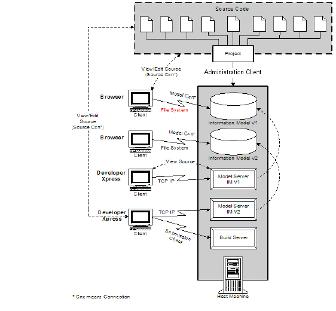

DIScover in the Enterprise Environment
DIScover deployment is flexible to suit the needs of the most complex environments, allowing you to combine the numbers of Browsers, Developer Xpress clients, and model servers that is right for your organization.
While it is the responsibility of your DIScover administrator to set up the environment, create models, and configure clients, it is important to understand the basic structure of DIScover in the enterprise environment so that you are aware of how to communicate with your information model. This knowledge also helps to prepare you with the questions to ask about connection specifics in your environment once DIScover is deployed.

DIScover information models are built based on projects and subprojects maintained in your organization’s SCM (software configuration management) system. Administrators build models using the administration client (previously, a series of procedures known as DISIM (Discover Information Model) were used). Once created, the model resides in a raw data structure on the host machine. The DIScover host machine makes DIScover data available in two ways:
• Directly through the information model data structure—supports Browser clients. Browser clients connect to the information model through a file system connection.
• Through the model server—supports Developer Xpress client and Access. Developer Xpress and Access clients connect to the model server via TCP/IP.
Clients also directly access their source code files, most often through your configuration management system. Integration with common IDEs such as Emacs and gVim and your Configuration Management (CM) system itself allow them to check out, manipulate, and check files from within their DIScover clients. In addition, if a direct connection to source code is not supported (as in the case of a firewall), end users are also able to use their Developer Xpress clients to access a portable, read-only copy of an information model’s source code files available through the model server.
Another host machine, usually separate from the primary host, is also used to deploy the build server, which manages Submission Check for Developer Xpress clients. The build server communicates both with source files (through the CM system) and with the model server host machine.